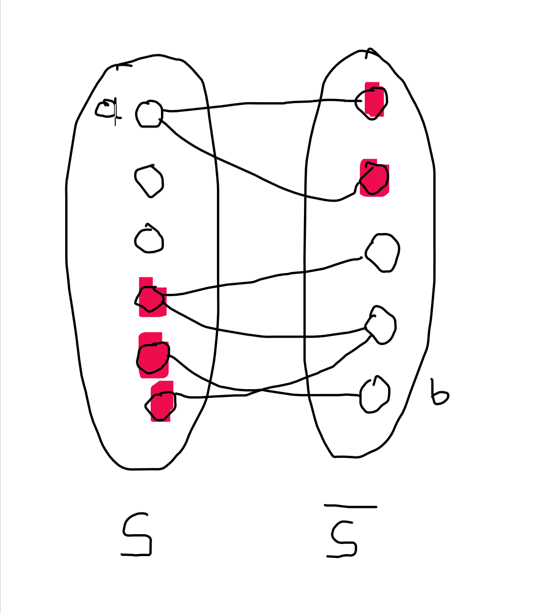

- Kontrakcja krawędzi grafu
- Fakt #1
- Definicja Minor grafu
- Twierdzenie Wagnera
- K3,3 na torusie
- Definicja Genus grafu
- Twierdzenie #2
- Fakt #3
- Definicja Spójność wierzchołkowa grafu spójnego
- Definicja spójność krawędziowa grafu spójnego
- Twierdzenie #3
- Definicja (A,B)–ścieżka
- Definicja (A,B)–konektor
- Definicja (A,B)–separator
Kontrakcja krawędzi grafu
Niech (V,E,φ) będzie grafem i e∈E
Niech φ(e)={a,b}
Kontrakcją grafu G względem krawędzi e nazywamy graf G/e - ze zbiorem wierzchołków (V∖{x,y})∪{w} (gdzie w jest jakimś elementem nie należącym do V) - ze zbiorem krawędzi E∖{e} - funkcją incydencji φ′ określoną wzorem φ′(f)={{x,w}φ(f)φ(f)={x,a}∨φ(f)={x,b}otherwise Uwaga: formalna definicja jest nieco zawiła, ale intuicja jest prosta: krawędź {a,b} ściągamy do jednego wierzchołka.
Kontrakcja grafu Petersena
Fakt #1
Następujące operacje nie zmieniają planarności grafów: - usunięcie wierzchołka - usunięcie krawędzi - kontrakcja krawędzi
Definicja Minor grafu
Graf G jest minorem grafu H (G⪯H) jeśli G może być otrzymany z grafu H za pomocą skończonej liczby operacji usunięcia wierzchołka, usunięcia krawędzi lub kontrakcji krawędzi.
Twierdzenie Wagnera
Graf nie jest planarny ⟺ (K3,3⪯G∨K5⪯G)
K3,3 na torusie
Eliminacja jedno przecięcia grafu K3,3
Powierzchnie orientowalne o małych „genusach”
Definicja Genus grafu
Genus Grafu = minimalna liczba rączek, które należy dodać do płaszczyzny (lub sfery) potrzebnych do narysowania grafu na tej powierzchni „bez przecięć”. ### Fakt Każdy graf (skończony) ma określony genus
Twierdzenie #2
Jeśli graf ma genus g to F−E+V=2−2⋅g
Fakt #3
Jeśli graf (V,E) jest spójny, n=∣V∣≥2 i nie jest grafem pełnym, to istnieje zbiór X⊆V taki, że ∣X∣=n−2 i G∖X nie jest spójny.
D-d Faktu #3
Załóżmy, że a,b∈V, a=b oraz {a,b}∈/E. Kładziemy X=V∖{a,b} i mamy G∖X=({a,b},∅).
Definicja Spójność wierzchołkowa grafu spójnego
Mamy graf spójny G=(V,E). Spójność wierzchołkowa G: κ(G)={n−1min{∣X∣:X⊆V∧G∖X nie jest spoˊjny}:G∼Kn:nie jest zupełny Uwaga: z powyższego faktu wynika, że dla dowolnego spójnego grafu prostego (V,E) mamy κ(G)≤∣V∣−1;
co więcej: κ(G)=∣V∣−1 ⟺ graf jest grafem zupełnym
Definicja spójność krawędziowa grafu spójnego
Mamy graf spójny G=(V,E). Spójność krawędziowa G: λ(G)=min{∣Y∣:Y⊆E∧G∖Y nie jest spoˊjny}
Twierdzenie #3
Dla dowolnego grafu spójnego G=(V,E) takiego, że ∣V∣≥2 mamy κ(G)≤λ(G).
D-d Twierdzenia #3
Niech E′ będzie zbiorem krawędzi takim, że G∖E′ nie jest spójny oraz, że ∣E′∣=λ(G). Wtedy G∖E′ ma dwie składowe spójne (dowolna krawędź z E′ uspójnia G∖E′). Oznaczmy je przez S oraz S.
Zauważmy, że (∀x∈S)(∀y∈S)({x,y}∈E→{x,y}∈E′).
Jeśli (∀x∈S)(∀y∈S)({x,y}∈E), to λ(G)=∣S∣⋅∣S∣=∣S∣(∣V∣−∣S∣)≥∣V∣−1
Ale κ(G)≤∣V∣−1, więc w tym przypadku dowodzona nierówność jest prawdziwa.
Załóżmy więc, że są a∈S oraz b∈S takie, że {a,b}∈/E.
Niech T1={y∈S:{a,y}∈E}, T2={x∈S∖{a}:(∃y∈S)({x,y}∈E}.
Niech T=T1∪T2  Zauważmy, że b∈S∖T oraz a∈S∖T. Usuwając wierzchołki ze zbioru T usuwamy wszystkie krawędzie ze zbioru E′. Zbiór T jest więc zbiorem rozspajającym (wierzchołki a i b leżą w różnych komponentach spójnych G∖T). Ponadto ∣T∣≤∣E′∣.
Zatem κ(G)≤∣E′∣=λ(G).
Definicja (A,B)–ścieżka
Niech A,B⊆V. (A,B)–ścieżką nazywamy drogę x0,x1,…,xn−1,xn w grafie taką, że x0∈A, xn∈B oraz {x1,…,xn−1}∩(A∪B)=∅.
Uwaga: jeśli A∩B=∅∧c∈A∩B, to ciąg (c) jest (A,B)–ścieżką długości 0.
Definicja (A,B)–konektor
Niech A,B⊆V. (A,B)–konektorem nazywamy dowolny zbiór parami rozłącznych (A,B)–ścieżek.
Definicja (A,B)–separator
Niech A,B⊆V. (A,B)–separatorem nazywamy dowolny zbiór wierzchołków X, taki, że dla dowolnej (A,B)–ścieżki P mamy P∩X=∅.